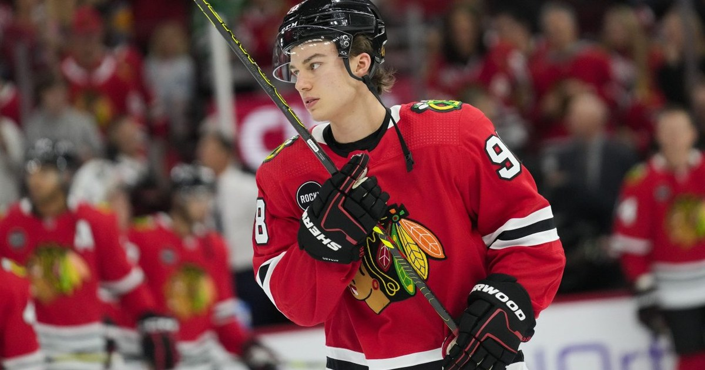

Connor Bedard out four months after shoulder surgery — the Blackhawks lose their captain until the season's final weeks
Connor Bedard's right shoulder surgery is done, and the timeline is now firm: about four months out. The Blackhawks' captain — and their leading scorer — won't be back until late March at the earliest, with the regular season nearly over.

Disclosure: this post contains affiliate links. I earn a commission on qualifying purchases.
The surgery is done, and the timeline is firm
Connor Bedard had surgery on his right shoulder on Monday, November 23, and the Chicago Blackhawks now have the answer they were waiting for since the decision was made on Saturday: their captain will be out for approximately four months.
Blackhawks team physician Dr. Michael Terry released the update after the procedure. "This afternoon, captain Connor Bedard underwent successful surgery to repair his right shoulder," Terry said. "We expect him to make a full recovery in an approximate timeline of four months."
That is the number Chicago was hoping to avoid hearing, and the one that changes the shape of the rest of the season. Bedard chose the surgical route rather than attempting rehabilitation, a decision made to avoid potentially delaying the procedure until the offseason. Dr. Peter Millett — the surgeon who operated on Bedard's left shoulder in July — performed this operation as well.
What the timeline means
If the recovery goes as planned, Bedard could return to the ice in late March or early April 2027. Chicago's final game of the regular season is scheduled for April 10 against the Seattle Kraken, so the timeline puts his return in the season's final weeks — with barely any runway left.
Whether he would be ready for a potential playoff run is a separate question, and one the team did not answer on Monday. The Blackhawks were placed in a difficult spot the moment the decision was made: at 8-14-2, they have won two in a row but sit well outside the playoff picture, and they will now spend the next four months finding out what the rebuild looks like without its centerpiece.
Bedard was placed on injured reserve on Sunday, freeing up a roster spot ahead of the procedure.
How it happened
The injury came on Tuesday, November 17, in Chicago's 6-3 win over the Toronto Maple Leafs. Bedard was set to take a faceoff against Maple Leafs forward Nick Paul 54 seconds into the third period when, as he put his stick on the ice, Paul's stick made contact with Bedard's right hand. The Blackhawks captain yelled out in pain and immediately went to the locker room. He did not return.
He had scored his seventh goal of the season at 18:51 of the second period, giving Chicago a 3-2 lead at the time.
For a few days, the Blackhawks held out hope that rehab might be enough. On Thursday, coach Jeff Blashill ruled Bedard out of that night's game against Columbus and the three-game road trip that followed, saying the medical staff was still weighing rehab against surgery. On Saturday, after a 4-3 overtime win in Calgary, general manager Kyle Davidson announced the decision: surgery, this week, with no timeline until after the procedure.
The third shoulder injury in less than a year
This is the third shoulder injury for Bedard in less than a year, and the pattern is what makes it sting.
His first right-shoulder injury happened much like this one — setting up for a last-second faceoff, against the St. Louis Blues on December 12, 2025. He came back from that one against the Washington Capitals on January 9, but he did not take a faceoff in a game until February 26 against Nashville, when he went 8-for-16.
The left shoulder went under the knife this past summer. Bedard injured it during an offseason training session in Vancouver in early July and had surgery a few days later. He was originally expected to be out until November. He beat it — returning for the season opener on October 13.
Now the right shoulder needs the same operation, and the same surgeon. The difference this time is the calendar: there is no summer to recover in. The four-month window runs straight through the heart of the season.
The faceoff question
Blashill was asked on Wednesday whether there is a concern about Bedard taking faceoffs moving forward, and he did not dodge it.
"I haven't looked at the video back-to-back yet, but I think in both instances, when he went to the face-off he actually hit the opponent's stick on the way down," Blashill said. "It's like you're not expecting that and it jerks yourself a little bit. It was the exact same thing in a lot of ways."
The coach added that the team knew the risk was there. "We knew there was high risk of it coming back out, not just [on] face-offs, just high risk. He knew the odds. That's the reality of it. So, whatever. We'll have to kind of move forward but part of what he is as a centerman is taking face-offs. I do think there are ways to take them without picking your stick up and coming down. So that's also something we'll explore."
Patrick Kane, speaking on Thursday before the timeline was known, put the loss in plain terms. "Obviously we're thinking about him," Kane said. "I think he knows how big of a piece he is to this team, what he means to the organization. Entertainment value, right, for fans and for the League and what he's able to provide to the game. So, obviously it's tough when you're missing a player like that."
What Chicago loses
Bedard leads the Blackhawks with 18 points in 15 games this season, tied with forward Roman Kantserov. He is the 2023 No. 1 overall pick, the face of the rebuild, and the player Chicago signed to a five-year, $75 million contract extension in July before naming him captain in September. Across his career, he has 221 points in 234 games with the Blackhawks.
The Blackhawks conclude their three-game road trip against the Seattle Kraken on Wednesday night. They will do it without their captain, and they will do the next four months the same way — waiting on a timeline that, for the first time since the injury, finally has a number on it.
Gear up: Fanatics